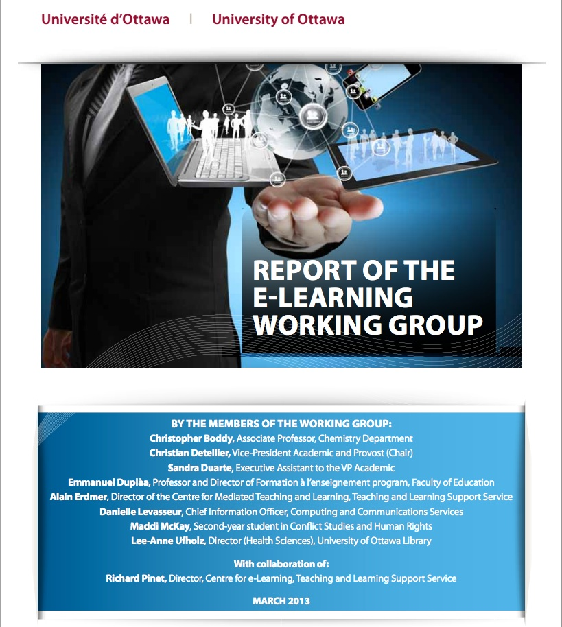

13.6 Uma estratégia institucional para o ensino na era digital



Verifica-se que variáveis como a formação e desenvolvimento docente, a dimensão das turmas, a contratação de professores adjuntos e assistentes de ensino, e o trabalho colaborativo em equipe condicionam a capacidade da instituição de assegurar metodologias de ensino orientadas para o desenvolvimento de competências para a era digital. Embora seja viável para um docente de carreira estável implementar individualmente as reconfigurações pedagógicas necessárias, para a generalidade dos professores impõe-se o suporte institucional estruturado. A instituição de ensino superior concretiza este suporte por intermédio de planos estratégicos formais que definam:
- a fundamentação para as atualizações pedagógicas;
- as metas e resultados esperados (ex.: estudantes dotados de competências digitais e intelectuais específicas);
- as medidas práticas de apoio (ex.: linhas de financiamento para design de novas disciplinas, reconfiguração dos serviços de apoio);
- o planejamento financeiro sustentável de suporte às inovações pedagógicas;
- os mecanismos de acompanhamento e avaliação da implementação da estratégia.
Mapeiam-se diferentes metodologias para a elaboração destas políticas (ver Bates e Sangrà, 2011), integrando fluxos de pendor descendente (top-down) e ascendente (bottom-up). No ensino universitário, esta dinâmica desenvolve-se no âmbito do planejamento acadêmico periódico, no qual faculdades e departamentos submetem as suas propostas letivas de médio prazo e as necessidades de recursos associadas, alinhadas com as metas estratégicas da universidade. Neste ciclo, as metas voltadas a responder às necessidades dos estudantes digitais devem configurar-se como objetivos específicos para os departamentos. Estes planos devem detalhar não apenas os conteúdos científicos, mas as metodologias didáticas e as modalidades de ensino recomendadas, acompanhadas da respectiva fundamentação.
Diversas instituições encontram-se a implementar este planejamento estratégico, tais como a Flexible Learning Initiative da Universidade da Colúmbia Britânica e o plano de e-learning da Universidade de Ottawa. No contexto canadense, a maioria das instituições de ensino superior reconhece a relevância de desenhar estratégias para o ensino digital. Donovan et al. (2019) apontaram que 71% das instituições inquiridas consideravam a aprendizagem on-line prioritária para o planejamento estratégico e acadêmico de longo prazo da organização. Contudo, apenas 42% contavam com planos específicos para o e-learning em fase de execução, desconhecendo-se o alinhamento destas políticas com o desenvolvimento de competências para a era digital face ao foco prioritário em infraestruturas e aspetos organizacionais. Um planejamento de pendor dinâmico com avaliação periódica apresenta-se indispensável para estes projetos.
Finalmente, os leitores desta obra devem envolver-se ativamente nestes processos institucionais, influenciando as tomadas de decisão e a formulação de políticas. Sem suporte estratégico da instituição, a concretização de inovações pedagógicas profundas enfrenta limitações severas.
Referências
Bates, A. and Sangrà, A. (2011) Managing Technology in Higher Education: Strategies for Transforming Teaching and Learning San Francisco: Jossey-Bass/John Wiley & Co.
Donovan, T. et al. (2019) Tracking Online and Distance Education in Canadian Universities and Colleges: 2019 Canadian National Survey of Online and Distance Education Halifax NS: Canadian Digital Learning Research Association
University of British Columbia (2014) Flexible Learning – Charting a strategic vision for UBC (Vancouver Campus) Vancouver BC: Flexible Learning Implementation Team
University of Ottawa (2013) Report of the e-Learning Working Group Ottawa ON: The University of Ottawa
Atividade 13.6 Elaborando uma estratégia institucional de apoio ao ensino e aprendizagem
- A sua instituição dispõe de uma estratégia de ensino e aprendizagem formal? De que forma avalia a sua qualidade? O plano aborda de forma consistente as necessidades dos estudantes na era digital?
- Caso coubesse ao leitor desenhar ou redefinir a estratégia de ensino e aprendizagem da sua instituição, quais componentes e políticas integraria?
Esta atividade destina-se a fins de reflexão individual, não contando com feedback associado.